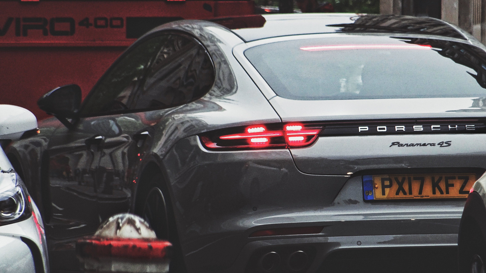

The Porsche Panamera is a mid/full-sized luxury vehicle (E-segment in Europe) manufactured by the German automobile manufacturer Porsche. [1][2][3] It is front-engined and has a rear-wheel-drive layout, with all-wheel drive versions also available.
The production version of the Porsche Panamera was unveiled at the 13th Auto Shanghai International Automobile Show in Shanghai, China, in April 2009.[4] In 2011, hybrid and diesel versions were launched. In April 2013, a facelift to the Panamera was announced, making its debut again at the Shanghai Auto Show.[5] A plug-in hybrid version, the Panamera S E-Hybrid, was released in the U.S. market in November 2013. [6] The Panamera range received a re-design in 2016.